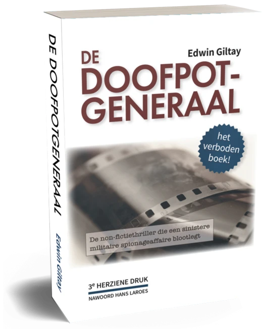

Bewijsstuk · Brief
Tweede Kamer aan de Bezwaaradviescommissie, toelichting op Woo-besluit W2026005, 14 oktober 2026
De passage
“Hoewel het boek maatschappelijke impact heeft gehad, tot discussie heeft geleid en een rol heeft gespeeld bij de procedure die leidde tot het arrest van de Hoge Raad van 19 juli 2019 (ECLI:NL:HR:2019:1223), zijn deze factoren, evenals het journalistieke belang zoals verzoeker stelt, geen belangen die op grond van de Woo in de belangenafweging meetellen.” Pagina 10 van de toelichting (pagina 2 van deze pdf). De regels zijn hier aaneengeschreven.

Waarom dit document telt
In deze toelichting van 14 oktober 2026 verdedigt de Stafdienst Juridische Zaken van de Tweede Kamer tegenover de Bezwaaradviescommissie het besluit van 20 april 2026 op Giltays Woo-verzoek. Daarin vroeg Giltay om stukken van de commissie voor de Inlichtingen- en Veiligheidsdiensten over de affaire uit het boek; volgens het besluit werd daar niets aangetroffen. In dat verweer erkent de dienst dat het boek maatschappelijke impact heeft gehad, tot discussie heeft geleid en een rol heeft gespeeld bij de procedure die leidde tot het arrest van de Hoge Raad van 19 juli 2019 in de zaak van de Moeders van Srebrenica tegen de Staat. Direct daarna voegt de dienst eraan toe dat zulke factoren onder de Woo niet meetellen. De pdf bevat de pagina’s 1, 10 en 11 van het stuk.
Herkomst
- Document
- Schriftelijke toelichting van de Tweede Kamer in de bezwaarprocedure tegen Woo-besluit W2026005, met een inventarislijst en vijf stukken
- Van
- Woo-loket, Stafdienst Juridische Zaken, Tweede Kamer der Staten-Generaal, Den Haag
- Aan
- Bezwaaradviescommissie Woo en Who van de Tweede Kamer, ter attentie van de voorzitter
- Datum
- 14 oktober 2026
- Kenmerk
- W2026005/BZ260519
- Onderwerp
- “Toelichting besluit W2026005/ BZ260519 - Giltay/de Doofpotgeneraal”
- Verwijzingen
- Het besluit van de griffier van de Tweede Kamer van 20 april 2026 op Giltays Woo-verzoek van 2 februari 2026, en zijn bezwaarschrift van 19 mei 2026
- Ondertekend
- Woo-jurist, Stafdienst Juridische Zaken; naam en handtekening zijn in deze pdf zwartgelakt
- Zwartgelakt
- Het e-mailadres van de behandelend jurist (pagina 1) en de naam en handtekening van de ondertekenaar (pagina 11)
- Ontvangen
- Per e-mail van de secretaris van de Bezwaaradviescommissie aan Giltay, 14 oktober 2026
- Taal
- Nederlands
- Pagina’s
- 1, 10 en 11 van 11; de inventarislijst en de vijf bijgevoegde stukken zijn niet opgenomen
- Berust bij
- Edwin Giltay, de bezwaarmaker
- Zie ook
- Hoge Raad, arrest van 19 juli 2019 (ECLI:NL:HR:2019:1223)Moeders van Srebrenica, memorie van grieven, 7 juli 2015Giltay aan drie leden van de CIVD, 20 november 2010Vaste commissie voor Defensie aan Giltay, 18 september 2017
Aangehaald in: het essay ‘Het verbod viel, het boek bleef overeind’ in het hoofdstuk (10) ‘Barsten in de muur’.
Bewijsstukpagina: https://
Document: https://
Laatst gewijzigd 15 oktober 2026, geraadpleegd 16 oktober 2026.

Deze pagina is een bewijsstuk bij het boek De doofpotgeneraal van Edwin Giltay en de bijbehorende website.